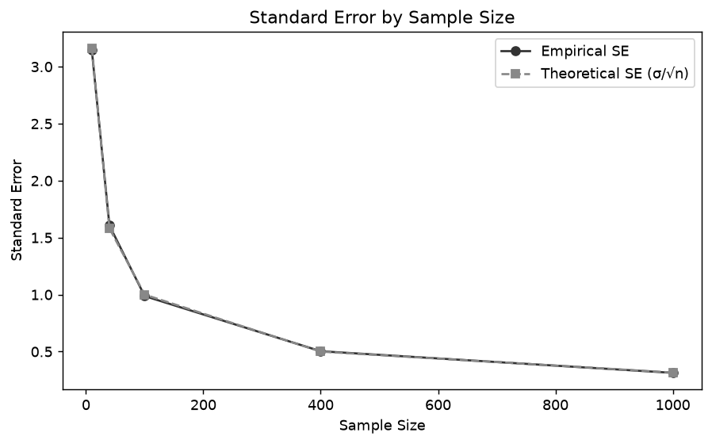
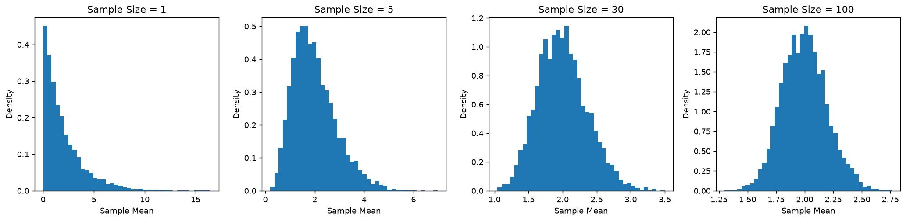

1) 질문. 표본 크기를 4배로 늘리면 표준오차는 절반으로 줄어드는가?
→ 그렇다. 표준오차 SE = σ/√n 에서 n이 4배면 √4=2로 나뉘어 절반이 된다.
2) 예상.
→ n을 4배로 늘리면 SE가 정확히 절반이 되고, 그래프는 급락 후 완만해지는 수확 체감 곡선일 것이다.
for n in [10, 40, 100, 400, 1000]:
means = [np.random.normal(50, 10, size=n).mean() for _ in range(2000)]
empirical_se = np.std(means, ddof=1)
theoretical_se = 10 / np.sqrt(n)4) 결과.
→ 경험적 SE와 이론값(σ/√n)이 거의 일치했고, n=10→40에서 3.14→1.61(0.51배), n=100→400에서 0.99→0.50(0.51배)으로 절반이 됐다.

5) 해석. 표본이 4배가 되면 표준오차는? 오차를 1/3로 줄이려면 표본은 몇 배?
→ 4배 → 표준오차 1/2. 오차를 1/3로 줄이려면 표본 9배가 필요하다(1/c로 줄이려면 c²배). 분모가 √n이라 데이터를 늘릴수록 효율이 떨어지는 수확 체감이 나타난다.
6) AI 응용. AI 모델 평가의 오차를 줄이려면 데이터가 얼마나 필요한가?
→ 평가지표도 SE ∝ 1/√n 을 따른다. '많을수록'이 아니라 목표 정밀도에서 역산하는 것이 맞다 — 정확도 1%p 차이를 논하려면 테스트셋이 최소 3,000개 이상이어야 한다. 데이터를 못 늘릴 땐 paired 비교·층화추출로 분자 σ를 줄이는 편이 효율적이다.
1) 질문. 원자료가 치우친 분포여도 표본평균의 분포는 정규분포에 가까워지는가?
→ 그렇다. 원자료가 치우쳐 있어도 표본평균의 분포는 n이 커질수록 정규분포에 가까워진다.
2) 예상.
→ 지수분포(왜도 2.0)를 원자료로 쓰면, n이 커질수록 ① 모양이 대칭 종모양이 되고 ② 퍼짐이 1/√n로 좁아지며, 중심은 항상 모평균 2에 머물 것이다.
for n in [1, 5, 30, 100]:
means = [np.random.exponential(scale=2, size=n).mean() for _ in range(5000)]
plt.hist(means, bins=40, density=True) # n별 표본평균 분포4) 결과.
→ n이 커지며 왜도가 2.037→0.204로 줄어 종모양이 됐고, 표준편차는 2.091→0.198로 축소, 평균은 계속 2로 유지됐다.

5) 해석. 표본 크기가 증가하면서 분포의 모양과 퍼짐은 어떻게 달라지는가?
→ 세 가지가 동시에 일어난다 — 중심(평균)은 불변, 퍼짐(SD)은 1/√n로 축소(제곱근의 법칙), 모양(왜도)은 1/√n로 정규분포화(중심극한정리). 단, CLT는 모분산이 유한할 때만 성립한다(코시분포 등은 예외).
6) AI 응용. 중심극한정리는 AI 모델의 반복 평가와 어떤 관련이 있는가?
→ AI 모델의 반복 평가는 같은 모델을 시드·샘플링·데이터 순서 등을 바꿔 여러 번 평가하고 점수들을 모으는 것이다. 한 번의 점수만으로는 무작위성 때문에 진짜 성능을 판단할 수 없기 때문이다. 중심극한정리에 따라 반복 횟수가 늘수록 평균 점수의 분포는 정규분포에 가까워지고 그 분산은 1/√n로 줄어든다. 그 덕분에 모델 성능을 더 안정적으로 추정하고, 모델 간 성능 차이가 통계적으로 유의미한지 검정할 수 있다.
측정된 점수를 그대로 믿기보다 표본에서 얻은 추정치로 보게 된 것이 가장 큰 배움이었다. AI 모델을 평가할 때 단일 seed 결과나 작은 테스트셋을 신뢰하는 것이 위험하다는 점을 체감했고, 앞으로 지표를 볼 때 신뢰구간과 표본 크기를 함께 확인해야겠다고 느꼈다. 통계 공식(σ/√n)이 실제 시뮬레이션 값과 거의 정확히 맞아떨어지는 것을 눈으로 확인하면서 이론에 대한 신뢰도 커졌다.